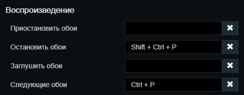
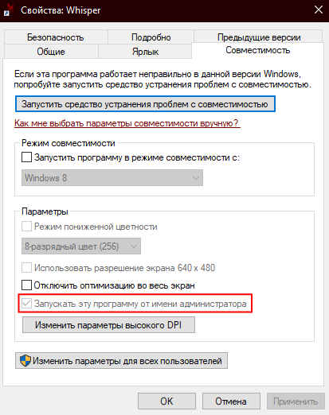
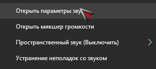
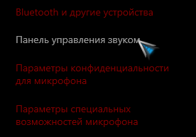
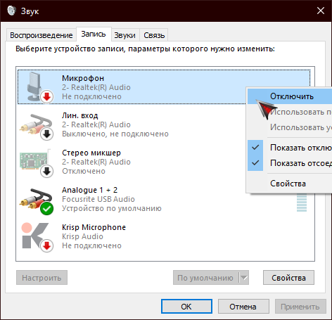

Как правильно устанавливать Whisper
После покупки лицензии:
1. Скачайте архив
2. Всё содержимое перетяните в папку с названием "Whisper" (название папки важно!)
3. Настройте помощника на свой вкус
4. Запустить Whisper.exe и не забудьте добавить ярлык в автозапуск
Настройка действий с обоями Wallpaper Engine
Выставьте настройки горячих клавиш как на скриншоте и перезапустите помощника

Непонятная ошибка при запуске
1. Ошибка устройства
Убедитесь, что ваши микрофон и наушники подключены и исправно работают
2. Ошибка доступа к файлу Logs.txt
Если вы столкнулись с этой ошибкой, наверняка вы переместили папку помощника в защищённую Windows папку
Для исправления этой ошибки, создайте ярлык, который будет открывать помощника от имени администратора
Для этого нажмите ПКМ по ярлыку >> Совместимость >> Запускать от имени администратора

Помощник не распознаёт мои фразы
1. Убедитесь то что у вас хороший микрофон
2. Отключите все устройства записи звука, кроме активного микрофона
Для этого
нажмите пкм по звуку в трее

Откройте панель управления звуком

В меню записи выключите все устройства, кроме активного микрофона
